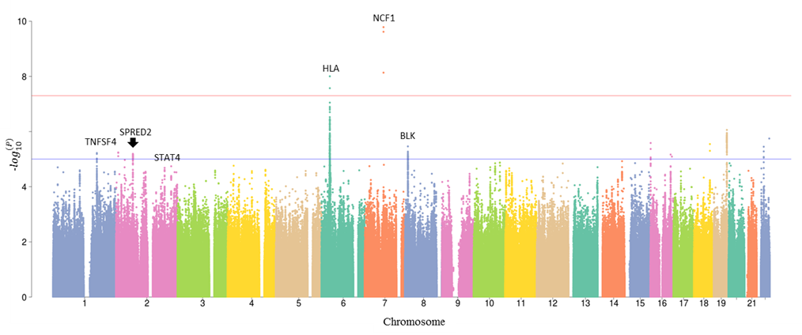
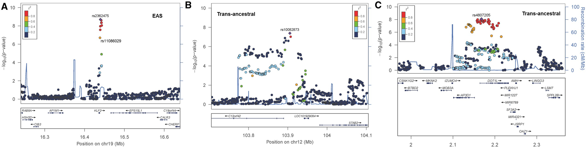

SLE is a complex autoimmune disease with high genetic heretabilty. Prof. Wanling Yang’s group is dedicated to the genomic and transcriptomic research of SLE. During my study in Prof. Yang’s lab, I have been involved in mutlitple projects of SLE common variants GWAS analysis.
1. Identification of KLF2, STAB2, and DOTL1 loci in SLE.
My first jobs in the lab was analyzing a cohort of SLE SNP array data from the Jining Medical College affilicated hospital. It is a small cohort with 512 cases and 994 controls after quality control. Analysis was perfored using standard GWAS pipeline. However, no novel locus was identified due to the limited sample size. As shown in Fig 1, only GTF2I gene locus was identified with genome-wide significance (P value < 5E-8). Some known SLE loci, including HLA, STAT4, TNFSF4, and BLK, were identified with suggestive significance (P value < 1E-5).

Luckly, GWAS analysis results from independent cohorts could be combined to increase the sample size and power. There are lot of SLE SNP data available in Prof. Yang’s lab. Therefore, I performed a meta-analysis of SLE GWAS summary statistics by combining the results from East Asian (EAS) cohort, which includes data from Jining Medical College, Hong Kong , Guang Zhou, and An Hui’s. A comparison of EAS and European (EUR) cohort was also performed. STAB2 and DOTL1 loci were identified surpass P-value < 5E-8 in both EAS and EUR cohort. KLF2 locus was identified with genome-wide significance in EAS cohort only. The results were shown in Fig 2.

Publication of this work could be find here: Oxford Rheumatology.
2. X chromosome and SLE.
SLE is well known to higher prevalence in females with 9:1 onset ratio. Therefore, X chromosome is a capativating region for SLE genetic research. One of research in Prof. Yang’s team has reported GPR173 locus on X chromosome is associated with SLE, and showed a candidate idependent novel signal in L1CAM-IRAK1-MECP2 region in Asian population. Inspired by this work, our collaborator from Chulalongkorn University shared their X chromosome SNP array data with us.
To be continued…